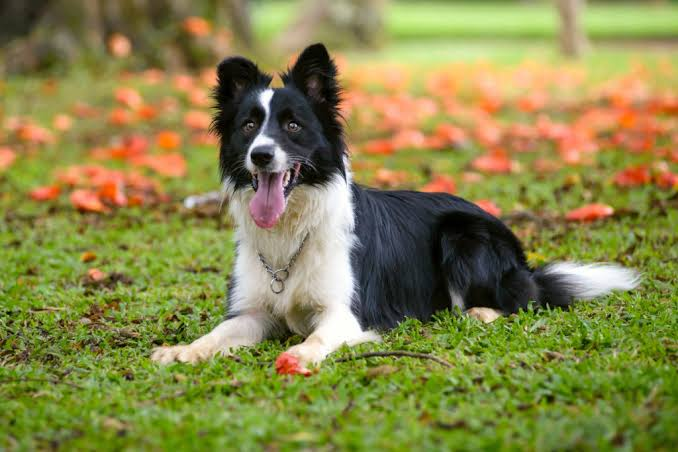
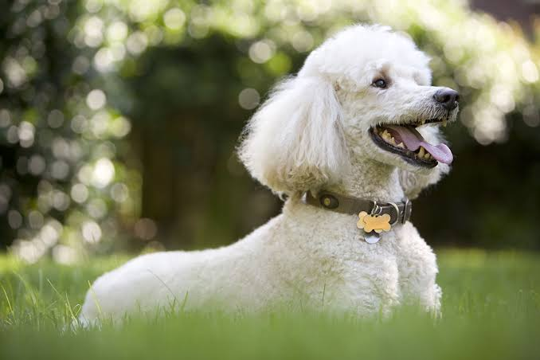
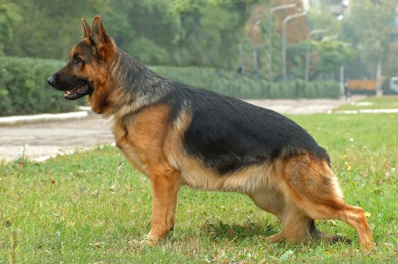
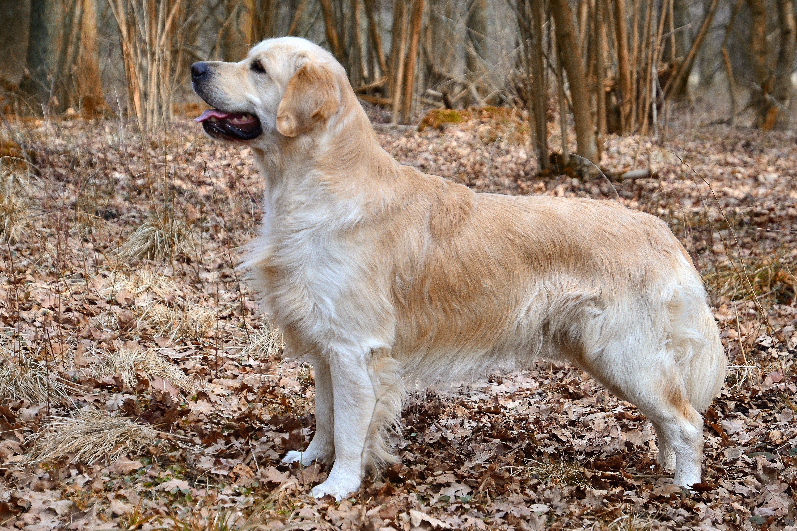
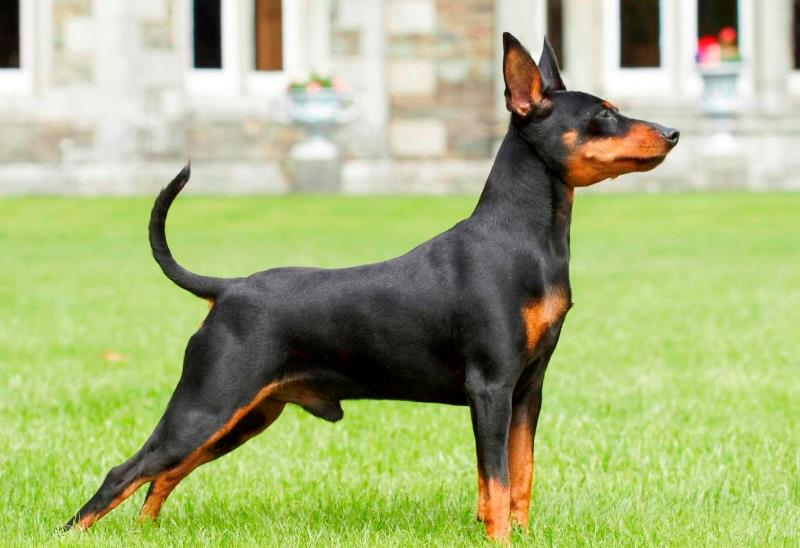
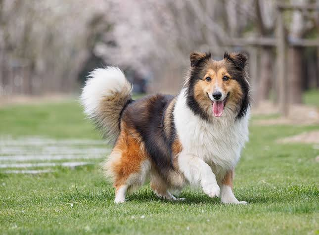
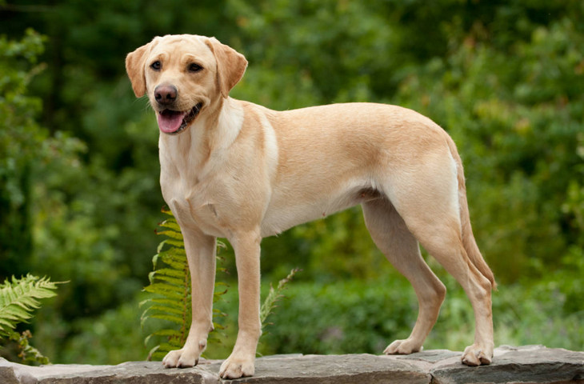
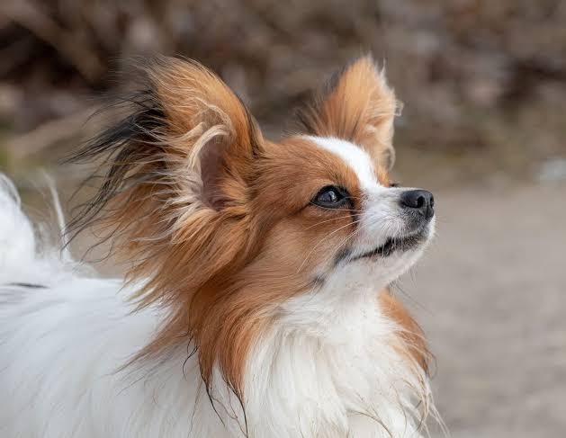
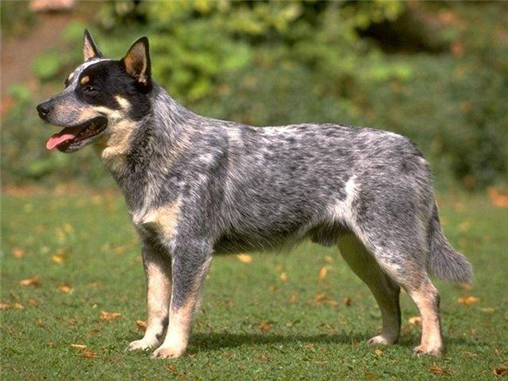

Ротвейлер
Ротвейлери впевнені в собі, потужні та добре піддаються дресируванню, часто використовуються в таких ролях, як охорона, пошук і порятунок.

Бордер-коллі — це дуже розумна та енергійна порода, відома своїми винятковими навичками пастухування та здатністю до навчання.
Пуделі - дуже розумні та універсальні собаки, відомі своєю гострою здатністю до навчання та відмінною здатністю до навчання в різних завданнях.
Німецькі вівчарки відомі своїм розумом, сміливістю та універсальністю, що робить їх чудовими робочими собаками в різних сферах.
Золоті ретривери розумні, доброзичливі та віддані, що робить їх чудовими домашніми тваринами та добре піддаються навчанню різним видам діяльності.
Добермани відомі своєю лояльністю, розумом і здатністю до навчання, їх часто використовують як робочих собак для охорони.
Шетландські вівчарки розумні, слухняні та спритні, відмінно справляються з пастушкою та різними собачими видами спорту.
Лабрадори ретривери доброзичливі, комунікабельні та добре піддаються дресируванню, що робить їх популярними як сімейні домашні тварини та робочі собаки.
Папійони — маленькі, розумні та енергійні собаки, відомі своєю здатністю навчатися трюкам і добре виступати в змаганнях з аджиліті.
Ротвейлери впевнені в собі, потужні та добре піддаються дресируванню, часто використовуються в таких ролях, як охорона, пошук і порятунок.
Австралійські пастуші собаки дуже розумні, енергійні та віддані, чудово пасуться та в різних собачих видах спорту.
